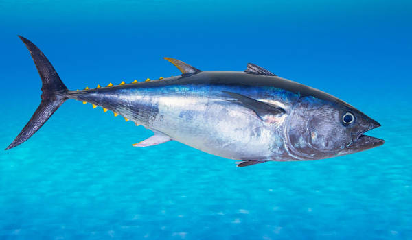

Descripción de su hábitat y estilo de vida:
Prácticamente se puede encontrar al atún en cualquier parte del océano. Eso sí, hay que recalcar que este animal marino suele encontrarse en aguas cuyas temperaturas sean elevadas, llegando a nadar solamente por la superficie. Es por este motivo que el atún se puede encontrar fácilmente en las costas o las adyacencias a las mismas, nadando en bancos donde se puede capturar no uno sino varios atunes al mismo tiempo.
Características: